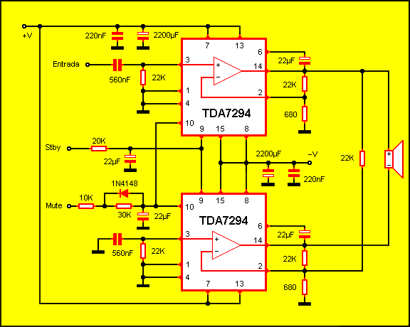

Este circuito permite elevar el nivel de potencia de una señal de audio proveniente de cualquier fuente que tenga salida tipo LINE.
El gran secreto de este circuito son los integrados TDA7294 cuyo interior alberga un amplificador operacional de potencia junto con la circuitería del pre-amplificador, el control de temperatura y el protector de corto circuito en salida. Adicionalmente este integrado está provisto de entradas independientes de Mute (Enmudecer la salida) y Stby ó Stand-By (Desconectar la etapa de potencia). Cada uno de los integrados aplifica un semi-ciclo de la señal de entrada proporcionando cada uno 50w de salida. El circuito debe ser alimentado con +/-25V y 4A. En caso de hacer un equipo stereo la corriente debe ser de 8A. La carga (parlante) debe ser de 8 ohms . Con estos valores el circuito proporciona 100w con una distorsión total inferior al 0.1% o 150w con una distorsión total cercana al 10%. Dado que esta configuración en puente alimenta al parlante por sus dos bornes (positivo y negativo) el negativo no debe ser cableado a masa como en otros amplificadores. Hacerlo provocaría un corto-circuito en la salida del chip activando su protección y destruyéndolo si esto no se revierte a tiempo.
Para la fuente de alimentación puede utilizar el clásico transformador o puede emplear una fuente conmutada (switching) en este último caso la fuente debe ser de buena calidad y estar bien filtrada. Aunque si el peso no es un factor de problema recomendamos emplear el viejo y querido transformador con su puente rectificador y sus capacitores electrolíticos y cerámicos.
El fabricante de este integrado (SGS-Thompson) recomienda activar la función Mute antes de usar la función Stand-By. Este integrado genera 1.3 grados centígrados por cada watt de potencia. Es por ello que debe colocarse en un disipador de calor o complejo térmico lo suficientemente adecuado para no sobrecalentar el sistema y provocar un apagado por sobre-temperatura. La aleta de fijación se encuentra eléctricamente conectada con el pin de alimentación negativo (-V) por tal motivo debe ser montado con materiales aislantes apropiados para evitar corto-circuitos o problemas de ruido en la vía de audio. El precio en el mercado de este circuito integrado ronda los $ 9.-.
Si bien el fabricante asegura que este es un integrado de 100v / 100w hay que recordar que esa especificación es técnica y teórica. En la práctica el circuito integrado puede entregar 50w de potencia sobre una carga de 8 ohms a una tensión partida de 50v para lo cual consume unos 2 amperios y genera calor.